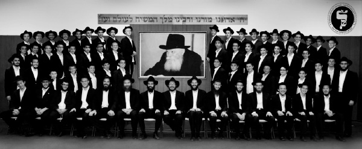

Yeshivas Lubavitch Cincinnati
Every person tries to give a present to the Rebbe for his birthday. Eight years ago on 11 Nissan 5766, a young man, Rabbi Gershon Avtzon, decided to give the Rebbe a very unique present. He announced the opening of a Yeshiva in Cincinnati Ohio that would be infused with Emuna in the Rebbe and his mission of “Lekabel P’nei Moshiach Tzidkeinu B’poel Mamash!” The success of the Yeshiva is known throughout the world. • In honor of 11 Nissan, Beis Moshiach conducted an interview with the founder and Rosh Yeshiva of Yeshivas Lubavitch Cincinnati, Rabbi Gershon Avtzon.

R.A.: It is truly my z’chus, privilege, honor and pleasure to be one of the contributors to the Beis Moshiach magazine, whose goal is to get people and the world ready for Moshiach. I also thank you for giving me this opportunity to share with the world a glimpse into our Yeshiva.
Let’s start with a very basic question. In the fewest words, what is the mission statement of Yeshivas Lubavitch Cincinnati?
R.A.: As a branch of Tomchei T’mimim, our job is to mold the students into חיילים who are dedicated to the mission of their Commander, the Rebbe MH”M.
It seems that there are three components included in that mission statement: 1) The Mission 2) The Commander 3) The Chayal. Can you elaborate a little on the vision that you have for your talmidim?
R.A.: When a soldier wants to know what his mission is, he must check what the commander has assigned for him. The same is for the Mechanchim. We as Mechanchim must look into the Sichos of the Rebbe and see what type of Chinuch the Rebbe expects us to give the Talmidim. In short, it is this: To live with Moshiach!
In the words of the Rebbe: “The most recent innovation in the work of shlichus is to receive our righteous Moshiach in the true and complete Redemption. Indeed, the preparation for the coming of our righteous Moshiach is the most all-encompassing aspect of Judaism and includes all the other points and details of the work of shlichus.” (Chayei Sara 5752).
ith regards to Chinuch, the Rebbe (Simchas Torah 5752) said: “According to our Sages, the verse ‘Do not touch My anointed ones (Meshichoi)’ refers to the children who study Torah.”
One of the explanations of this statement is that the education of school children has to be in a manner that the children are completely permeated and absorbed with the ideal of Moshiach. Just by looking at a Jewish child, what should one see? Moshiach! His entire being is “Moshiach,” the realization of “You have been shown… there is none beside Him.”
Are there any challenges you face, with instilling the inspiration necessary to fulfill this mission into the Talmidim?
R.A.: The first challenge we face is making the Talmidim realize that we have a “living” Rebbe, a Rebbe that they can relate and write to and who cares about them. No soldier will dedicate his life and give up his physical comfort for a mission that he views as a failing mission. Every talmid in our Yeshiva was born after Gimmel Tammuz. The foundation of our Chinuch is that even in 5774, the mission is real and actual because the commander is real and actual.
Therefore, besides for learning the Sichos and having constant videos of the Rebbe playing, we strive to get the boys to realize that they can each have a personal connection with the Rebbe. We are constantly telling them stories of the Rebbe that happened after Gimmel Tammuz and encouraging them to write to the Rebbe through his Igros Kodesh. When they see that they can receive an answer from the Rebbe, the Rebbe becomes “theirs.”
In addition, the boys coming to our Yeshiva are regular American boys, and many are brought up on shlichus and in small communities. For many of them, the word Moshiach is associated with “politics” or is foreign. To turn around and instill in them that this is their life mission can be a challenge.
So how do you handle this challenge?
R.A.: The truth is that in a certain way, Moshiach is foreign to all of us. We need to do exactly what the Rebbe says to do in such cases: Learn Inyanei Moshiach and Geula! In the words of the Rebbe (Balak 5751): “Despite the uproar associated with this matter … we see how difficult it is to inculcate the awareness and the feeling that we are literally standing on the threshold of the Messianic Era, to the point that one begins to thrive on matters of Moshiach and Redemption…
“The solution to this dilemma is Torah study concerning Moshiach and Redemption. For Torah – which is G-d’s wisdom, and thus transcends the natural order of the universe – has the capacity to alter the nature of man. Even when one’s emotions are still outside the parameters of Redemption, G-d forbid, (because he has not yet emerged from his internal exile), he can nevertheless learn the Torah’s teachings concerning Redemption and thereby be elevated to the state of Redemption. One then begins to thrive on matters of Redemption, borne of the knowledge, awareness and feeling that ‘behold he is coming.’”
The readers can check out www.ylcrecording.com for shiurim that were given in Yeshiva on this topic.
The goal of “living with Moshiach” is that Moshiach should affect the entire day and life of the person. What is supposed to be the “regular” life of a Talmid in Yeshiva?
R.A.: In order to be a soldier in the Rebbe’s army, one must have three foundations:
Chassid – He must have training in being a Chassid. This includes dedication to the Rebbe and to all his directives, tremendous Ahavas Yisroel even at the cost of some personal comfort and time, and an inner inspiration and fire in all that he is involved. This is accomplished through shiurim in Chassidus, going on Mivtzaim on Erev Shabbos and Yomim Tovim, and having special Farbrengens on chassidishe Yomei D’pagra.
Yerei Shamayim – A Soldier must have an inner fear of Heaven. A successful soldier cannot only listen to orders when he feels that the Commander is looking at him. He must have an inner fear of disobeying and a deep desire to constantly improve in the areas that are essential to the mission that needs to be accomplished. This is achieved through learning about Davening and by having a mashpia with whom he is honest and open. The Mashpia guides the Chassid in his personal development. This is also reflected in the Chassid’s middos tovos.
Lamdan – In order to fulfill his mission and to conquer the world, a soldier must be freed of the constraints of the world and live in a different world. The Chassid accomplishes this only through complete immersion into Limud HaTorah. This connects the Chassid with the King – Hashem – and empowers him to free himself of the “views” of the physical world and to make him receptive to the world of truth and holiness and purity. It is not enough to just study in Yeshiva; there has to be a complete immersion.
What is the hardest challenge in the above?
R.A. (smiling): Every talmid is a human being – and a teenager at that – who has a raging animal soul that wants to indulge in the imminent and physical. Many have come from communities and day schools where they have been focused primarily on this physical world and there needs to be an entire value system switch.
So, what “magical formula” do you use for your world-renowned success in this?
R.A. (laughing): There is no magic in Chinuch! It is a very hard Avoda that demands a lot of work and Siyata D’Shmaya. But in short, we stress 4 components:
First and foremost, we try to lead and show by example. They must see in us someone/something that they wish to aspire to. We, the Mechanchim, represent Judaism, Hashem and the Rebbe to the young Talmidim. We must constantly be aware of that and act accordingly.
Secondly, the staff members of YLC believe that we are on Shlichus to get through to the Talmidim. Just as a shliach must be aware of the unique needs of his community and find appropriate ways of connecting to and inspiring his community, we too believe that we must find a way to reach EVERY talmid. Just as the motto of a shliach is that “every Yid has a Neshama,” we truly believe that every talmid in Yeshiva was chosen by our holy Rebbeim and can and really wants to become a Chassid.
“They do not care how much you know, until they know how much you care.” When we show the talmidim our care for, trust in and love of them, they will be opened to the messages that we are trying to teach. This does not diminish the necessity for structure. On the contrary; at YLC, we constantly remind them that the reason there is structure and discipline is because we love them and want them to be successful.
The literal translation of Tomchei T’mimim is “the supporters of the T’mimim.” We do not believe that the talmidim are here to support the careers of the staff; rather the staff and entire institution are here to support the talmidim
Also, we always try to include in our staff an inspired group of Talmidei HaShluchim (frequently graduates of YLC) who believe in the mission of YLC. They dedicate themselves to their younger brothers and work with them in their advancement.
Lastly, we are strong believers in communication with our partners, the parents of the talmidim. They are the natural pillars of support for the talmidim and their involvement is crucial for success. We have a weekly report that goes out to the parents with the talmid’s grades and attendance. This facilitates communication and accountability.
So far, you have told us about the goals of the Yeshiva in general. Are there any special plans for the imminent future that you would like our readers to know about?
R.A.: Besides some structural changes that are being made in the Mesivta by adding some more married mashpiim etc., we are IY”H opening a Yeshiva G’dola “Al Derech K’b’Lubavitch.” We are working with the finest Yungelait to make sure that the Beis Midrash will attain the highest standards of learning and Yiras Shamayim. The details will be announced very soon.
Wow! This is amazing!
R.A.: I must tell you that this was a direct Bracha and miracle from the Rebbe.
For many years, the Yeshiva had two main people in Cincinnati who supported it, Rabbi Shalom B. Kalmanson (senior shliach) and Rabbi Moshe Toron. The Yeshiva had grown and we purchased a new building and dormitory. While there was talk of a Yeshiva G’dola, we hadn’t actually got the plans off the ground yet, since we felt that it would need its own building.
There is one Yid in Cincinnati, a holocaust survivor, who is dedicated to ensuring that there be frum chinuch in Cincinnati. His name – Mr. Sam Boymel – is on all chinuch buildings in the city. For many years, I tried to meet with him but had no success. About two years ago, I wrote a long letter to the Rebbe. In the letter I spoke about the financial stress I was going through and that many people were saying that it was because we are “too strong” with Moshiach etc.
I got a fascinating answer (Igros Vol. 2 page 282) in which the Rebbe writes that I should know that it is all a test from Hashem and that we will soon see that the test in nothing! The next day, Mr. Boymel showed up to Yeshiva on his own, asking to support us in our work! With his help, we were able to get an entire new campus for the Beis Midrash. Yesh Rebbe B’Yisroel!
If parents would like to speak with you about registration or donations, what could they do?
R.A.: They can visit our website www.ylcincinnati.com, or contact me at 513-631-2452 or email [email protected] .
Thank you very much. May we zoiche to eat the Korban Pesach in Yerushalayim this year, with the revelation of the Rebbe Melech HaMoshiach.
R.A.: Amen!
Beis Moshiach (staff). "Yeshivas Lubavitch Cincinnati." Beis Moshiach, no. 923 (April 9, 2014).